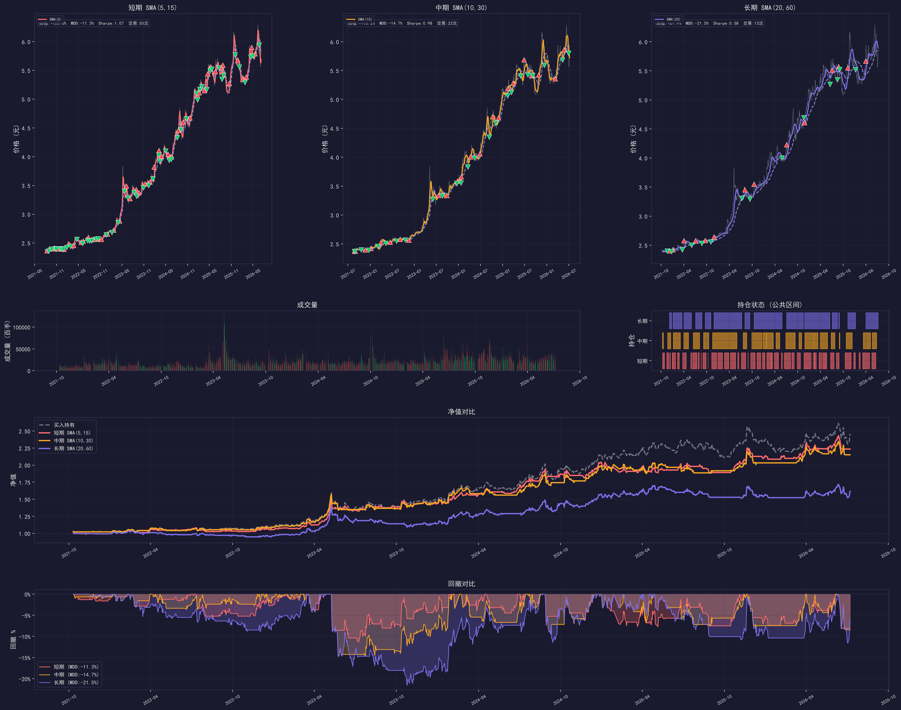
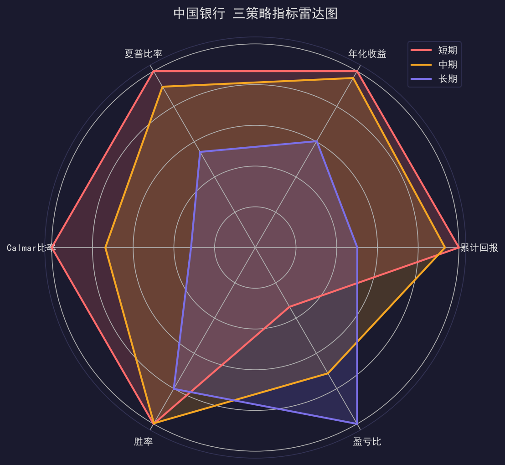

Dual SMA Crossover Strategy
Quantitative Backtest Report
1. Dual SMA Crossover Strategy Explained
1.1 What is a Moving Average?
The moving average is one of the most fundamental tools in technical analysis. It takes the average price over a fixed window, creating a smoothed curve that filters out daily noise and reveals the underlying trend direction.
Simple Moving Average (SMA) $$ \text{SMA}(n) = \frac{P_1 + P_2 + \dots + P_n}{n} $$ where $P_i$ is the closing price on day $i$, and $n$ is the window length.
- Short-term MA (e.g., SMA(5)) reacts quickly to price changes but is easily fooled by random noise.
- Long-term MA (e.g., SMA(15)) reacts slowly but better reflects the medium-to-long-term trend direction.
1.2 Core Logic
The dual SMA crossover uses two moving averages simultaneously:
- Fast MA — short-term trend, more responsive
- Slow MA — long-term trend, acts as an anchor
Core Idea: When the relationship between short-term and long-term trends flips, it signals a trend reversal — trade in that direction.
1.3 Golden Cross — BUY Signal
Golden Cross: Fast MA crosses above Slow MA.
$ SMA_{\text{fast}}[t] > SMA_{\text{slow}}[t] $ AND $ SMA_{\text{fast}}[t-1] \le SMA_{\text{slow}}[t-1] $
Think of two boats: a speedboat (fast MA) and a cargo ship (slow MA). When the speedboat overtakes the cargo ship, short-term momentum is outpacing the long-term trend — prices are likely heading higher.
Signal: Buy pressure increasing, uptrend forming → BUY
1.4 Death Cross — SELL Signal
Death Cross: Fast MA crosses below Slow MA.
$ SMA_{\text{fast}}[t] < SMA_{\text{slow}}[t] $ AND $ SMA_{\text{fast}}[t-1] \ge SMA_{\text{slow}}[t-1] $
When the speedboat slows down and the cargo ship overtakes it, short-term momentum is exhausted — prices are likely heading lower.
Signal: Sell pressure increasing, downtrend forming → SELL
1.5 Three Strategy Parameter Sets
| Strategy | Fast MA | Slow MA | Style |
|---|---|---|---|
| Short-term | SMA(5) | SMA(15) | 1 wk vs 3 wk. Highly sensitive, frequent signals (~10/year) |
| Mid-term | SMA(10) | SMA(30) | 2 wk vs 6 wk. Balanced sensitivity & stability (~5/year) |
| Long-term | SMA(20) | SMA(60) | 1 mo vs 3 mo. Strong trend filter, sparse signals (~3/year) |
1.6 Execution Mechanism
- No Look-ahead Bias: Signals are generated from T-day close data and executed at T+1 open — the backtest never "peeks" at the future.
- Long-only: No short selling (limited in A-shares). Buy on Golden Cross, sell on Death Cross. Cash when no position.
2. Quantitative Evaluation Metrics
Judging a strategy requires looking at both return AND risk. Here are the core metrics used in this report.
2.1 Cumulative Return
$$ \text{CumReturn} = \left( \frac{\text{Final NAV}}{\text{Initial NAV}} - 1 \right) \times 100\% $$
If you invested 100K and ended with 150K, cumulative return = 50%. Most intuitive measure of profit.
| Cumulative Return | Rating |
|---|---|
| > 100% | Excellent (doubled in 5 years) |
| 50% ~ 100% | Good |
| 0% ~ 50% | Average |
| < 0% | Loss-making |
Caveat: Cumulative return hides the journey. A 100% return strategy might have endured a 50% drawdown — few can hold through that.
2.2 Maximum Drawdown (MDD)
$$ \text{Peak}[t] = \max_{i=0}^{t} \text{Nav}[i] $$ $$ \text{Drawdown}[t] = \frac{\text{Nav}[t] - \text{Peak}[t]}{\text{Peak}[t]} $$ $$ \text{MDD} = \min_{t} \text{Drawdown}[t] $$
If your account goes from 100K → 180K (peak) → 144K (trough): MDD = (144 - 180)/180 = -20%.
This measures the "worst-case scenario." Many strategies make money long-term but lose followers due to brutal interim drawdowns.
| MDD Range | Risk Level | Description |
|---|---|---|
| 0% ~ -10% | Low | Minimal drawdown, comfortable holding |
| -10% ~ -20% | Moderate | Acceptable, requires some fortitude |
| -20% ~ -30% | Elevated | Needs strong psychology & capital management |
| < -30% | High | May trigger stop-losses, hard for retail investors |
2.3 Sharpe Ratio
$$ \text{Sharpe} = \frac{\bar{R}_{\text{daily}} - R_f}{\sigma_{\text{daily}}} \times \sqrt{244} $$ $\bar{R}_{\text{daily}}$ = avg daily return, $R_f$ = risk-free rate (2% annual), $\sigma_{\text{daily}}$ = daily return std dev, 244 = A-share trading days/year.
Two strategies both return 100%, but Strategy A is smooth like a highway while Strategy B is a roller-coaster. Higher Sharpe = returns earned more consistently and repeatably.
| Sharpe | Rating | Description |
|---|---|---|
| > 2.0 | Excellent | Institutional-grade risk/reward |
| 1.0 ~ 2.0 | Good | 1 unit excess return per 1 unit risk |
| 0.5 ~ 1.0 | Average | Positive but volatile |
| < 0.5 | Poor | Not worth the risk |
2.4 Win Rate
$$ \text{Win Rate} = \frac{\text{Winning Trades}}{\text{Total Trades}} \times 100\% $$
50 trades, 24 winners → Win Rate = 48%.
Important: win rate alone means nothing. A 40% win rate strategy with a profit-loss ratio > 2.5 still makes money. High win rate + tiny profit per win = still losing.
2.5 Profit-Loss Ratio
$$ \text{P/L Ratio} = \frac{\text{Avg Profit per Win}}{\text{Avg Loss per Loss}} $$
Avg win = +10%, avg loss = -5% → P/L = 2.0.
P/L = 2.0, Win Rate = 40% → Expected Return = $0.4 \times 2.0 - 0.6 \times 1.0 = 0.2 > 0$ ✅ Positive Expectancy
P/L = 1.0, Win Rate = 40% → Expected Return = $0.4 \times 1.0 - 0.6 \times 1.0 = -0.2 < 0$ ❌ Negative Expectancy
2.6 Calmar Ratio
$$ \text{Calmar} = \frac{\text{Annualized Return}}{|\text{MDD}|} $$
Two strategies both earn 20% annualized: Strategy A MDD -10% → Calmar = 2.0 (earn 2% per 1% pain). Strategy B MDD -40% → Calmar = 0.5. Higher Calmar = more money, less pain.
3. Stock Profiles
| Dimension | Bank of China (601988.SH) | SMIC (688981.SH) |
|---|---|---|
| Board | Shanghai Main Board | STAR Market (科创板) |
| Sector | Banking (State-owned) | Semiconductor (Foundry) |
| Market Cap | Mega-cap (Trillion+ RMB) | Large-cap (Hundreds of billions) |
| Volatility | Low, steady trends | High, sharp swings |
| Beta | Low Beta (Defensive) | High Beta (Offensive) |
| 5-Year B&H Return | +145.94% | +167.26% |
| 5-Year Annualized Vol | ~18% | ~42% |
These two stocks represent opposite investment styles: defensive stability (BOC) vs high-beta offense (SMIC). Their backtest results reveal how dual SMA strategies behave in different market regimes.
4. Strategy Results Comparison
4.1 Bank of China (601988.SH) — Three Strategies
| Metric | Short SMA(5,15) | Mid SMA(10,30) | Long SMA(20,60) | Buy & Hold |
|---|---|---|---|---|
| Cumulative Return | +123.61% | +115.16% | +61.93% | +145.94% |
| Annualized Return | 17.84% | 17.15% | 10.76% | 20.15% |
| Max Drawdown | -11.28% | -14.72% | -21.53% | — |
| Sharpe Ratio | 1.07 | 0.98 | 0.58 | — |
| Calmar Ratio | 1.58 | 1.17 | 0.50 | — |
| Win Rate | 48.00% | 47.83% | 38.46% | — |
| P/L Ratio | 2.04 | 4.33 | 6.07 | — |
| Total Trades | 50 | 23 | 13 | — |
| Avg Holding Days | 21.3 | 50.3 | 92.2 | — |
| Excess vs B&H | -22.33% | -30.78% | -84.01% | Benchmark |
Key Findings — BOC
1. SMA(5,15) is the only competitive strategy. Sharpe 1.07 ("Good"), MDD only -11.28%. Best risk-adjusted performance by far.
2. All three underperformed Buy & Hold. BOC enjoyed a steady +145.94% uptrend over 5 years. Any timing strategy sitting in cash during the climb misses out.
3. Longer cycles = worse results. SMA(20,60) with only 13 trades bet heavily on being lucky — it wasn't. Yet its P/L ratio of 6.07 is the highest: the few trades it made were quality picks.
4. Win rates cluster at 38%-48%. All below 50%, but positive P/L ratios maintain positive expectancy — the essence of trend-following: big wins cover small losses.
4.2 SMIC (688981.SH) — Three Strategies
| Metric | Short SMA(5,15) | Mid SMA(10,30) | Long SMA(20,60) | Buy & Hold |
|---|---|---|---|---|
| Cumulative Return | +252.49% | +105.80% | +77.55% | +167.26% |
| Annualized Return | 29.48% | 16.17% | 13.01% | 22.33% |
| Max Drawdown | -31.03% | -44.19% | -32.15% | — |
| Sharpe Ratio | 0.84 | 0.53 | 0.46 | — |
| Calmar Ratio | 0.95 | 0.37 | 0.40 | — |
| Win Rate | 29.55% | 43.48% | 36.36% | — |
| P/L Ratio | 4.31 | 2.04 | 3.22 | — |
| Total Trades | 44 | 23 | 11 | — |
| Avg Holding Days | 17.8 | 33.8 | 69.6 | — |
| Excess vs B&H | +85.23% | -61.47% | -89.71% | Benchmark |
Key Findings — SMIC
1. SMA(5,15) DECISIVELY beat Buy & Hold! +252.49% vs +167.26% — excess of +85.23%. The ONLY strategy-parameter combo to beat benchmark in this study.
2. High volatility = trend-following paradise. SMIC's violent swings create large, well-defined trends — perfect for dual SMA. The fast MA catches the start of moves and exits before reversals.
3. But the cost is higher drawdowns. MDD of -31.03% vs BOC's -11.28%. Higher returns come with higher pain. Sharpe 0.84 vs BOC's 1.07 — risk-adjusted efficiency is actually lower.
4. Win rate of only 29.55% — still massively profitable! 13 wins out of 44 trades. But avg win = +16.01%, avg loss = -3.72%. Trend-following doesn't rely on win rate — it relies on P/L ratio.
5. Mid & long strategies completely failed. SMA(10,30) MDD hit -44.19%. SMA(20,60) trailed B&H by nearly 90%. For high-volatility stocks, slow parameters miss too much.
4.3 Strategy Visualization
Beyond numbers, we present the results graphically with two types of charts: Strategy Chart (5-panel multi-view) and Radar Chart (6-dimensional strategy comparison).
4.3.1 Bank of China (601988.SH)

Row 1 (3 subplots): Price + SMA lines + Golden/Death cross markers for each strategy. Long-term signals are sparse; short-term trades frequently.
Row 2 Left: Daily volume. Row 2 Right: Position heatmap showing held/cash status of all 3 strategies over time.
Row 3: Cumulative NAV comparison — Short (red) tracks closest to B&H (gray). Long (purple) lags significantly.
Row 4: Drawdown comparison — Short strategy has the shallowest drawdowns.

4.3.2 SMIC (688981.SH)

NAV comparison: Short (red) NAV curve towers above B&H (gray). Mid (yellow) and Long (purple) strategies clearly lag.
Drawdown: Mid strategy suffered deepest (-44%). Short (-31%) recovered faster.

4.4 Cross-Stock, Cross-Strategy Comparison
| Dimension | Bank of China | SMIC |
|---|---|---|
| Optimal Parameters | Short SMA(5,15) | Short SMA(5,15) |
| Beat B&H? | No (-22.33%) | YES (+85.23%) |
| Optimal Sharpe | 1.07 (higher) | 0.84 |
| Optimal MDD | -11.28% (smaller) | -31.03% |
| Optimal Win Rate | 48.00% (higher) | 29.55% |
| Optimal P/L Ratio | 2.04 | 4.31 (higher) |
| Mid-term Viable? | Marginally | No |
| Long-term Viable? | Clearly No | Definitely No |
Core Pattern
| Low-Vol Stocks (Bank) | High-Vol Stocks (Semiconductor) | |
|---|---|---|
| Short SMA(5,15) | Effective risk control, trails B&H | Highly effective, crushes B&H but higher DD |
| Mid SMA(10,30) | Barely usable | Not recommended |
| Long SMA(20,60) | Not recommended | Not recommended |
5. Use Cases & Practical Takeaways
5.1 Where Dual SMA Thrives
Ideal Conditions
| Condition | Why | Example |
|---|---|---|
| High-volatility stocks | Big trend moves → big P/L ratios | SMIC SMA(5,15): P/L 4.31 |
| Strongly trending markets | Clear directional waves, not sideways chop | Semiconductor sector cycles |
| Short parameters first | 5/15 catches trends early | Optimal for BOTH stocks |
| Can tolerate 30%+ DD | High-beta stocks bring high drawdowns | SMIC MDD -31.03% |
Where It Struggles
| Condition | Why | Example |
|---|---|---|
| Long slow bull runs | Cash periods miss the climb | BOC +145.94% slow uptrend |
| Choppy/sideways markets | Frequent false crosses, cost accumulation | — |
| Low-volatility stocks | Trends too small to cover trading costs | — |
| Mid/long parameters (>= 10/30) | Severe signal lag | Both stocks' longer params failed |
5.2 Five Core Takeaways
Takeaway 1: Short-term SMA is the "Optimal Default"
SMA(5,15) was the best performer for BOTH stocks. This is not a coincidence: SMA(15) already filters daily noise sufficiently; SMA(5) keeps signals timely; ~10 signals/year provides statistical robustness.
Start with 5/15 as the default. Don't reach for longer cycles out of a false sense of "safety."
Takeaway 2: Stock Selection >>> Parameter Tuning
BOC's best strategy trailed B&H by -22.33%. SMIC's best beat B&H by +85.23%. That's a 107 percentage point difference — driven entirely by which stock, not which parameters.
The success of a dual SMA strategy depends far more on the stock's characteristics (volatility, trendiness) than on fine-tuning parameters.
Takeaway 3: Embrace "Imperfect" Win Rates
SMIC's short strategy had a 29.55% win rate — yet was the ONLY combo to beat B&H. Great trend-following strategies follow the pattern: fewer wins, bigger wins. Chasing high win rates often leads to "cutting profits short, letting losses run."
The math: with a 30% win rate, you only need P/L > $(1/0.3) - 1 = 2.33$ for positive expectancy.
Takeaway 4: Sharpe & Calmar > Raw Returns
BOC (+123.61%) trails SMIC (+252.49%) in raw return, but beats it in Sharpe (1.07 vs 0.84) and Calmar (1.58 vs 0.95). On a risk-adjusted basis, BOC's strategy is actually higher quality — generating solid returns with far less pain.
Always evaluate at least 3 metrics together: Sharpe, MDD, and Cumulative Return.
Takeaway 5: Don't Expect Dual SMA to "Beat Everything"
Out of 6 strategy-parameter combos, only 1 beat buy-and-hold. This doesn't invalidate the strategy. Its real-world value lies in:
| Value | Description |
|---|---|
| Risk Control | Cash position avoids major downturns |
| Capital Efficiency | Cash can earn money-market returns during idle periods |
| Rule Discipline | Mechanical execution eliminates emotional trading |
| Portfolio Diversification | Time-diversified exposure vs 100% fully invested |
5.3 Improvement Roadmap
| Priority | Direction | Expected Effect |
|---|---|---|
| P1 | Add ADX trend filter (ADX > 25 to allow signals) | Reduce false signals in choppy markets |
| P1 | Add ATR stop-loss (e.g., -2x ATR forced exit) | Lower MDD, especially for high-vol stocks |
| P2 | Multi-stock portfolio (5-10 stocks simultaneously) | Diversify single-stock concentration risk |
| P2 | Parameter optimization (grid search short/long combos) | Potentially improve returns further |
| P3 | EMA instead of SMA (exponential weighting) | May reduce signal lag |
Appendix: Complete Metrics Data
Bank of China (601988.SH)
| Metric | Short SMA(5,15) | Mid SMA(10,30) | Long SMA(20,60) |
|---|---|---|---|
| Cumulative Return | +123.61% | +115.16% | +61.93% |
| Buy & Hold Return | +145.94% | +145.94% | +145.94% |
| Excess Return | -22.33% | -30.78% | -84.01% |
| Annualized Return | 17.84% | 17.15% | 10.76% |
| Max Drawdown | -11.28% | -14.72% | -21.53% |
| MDD Date | 2023-07-07 | 2023-07-24 | 2023-10-25 |
| Sharpe Ratio | 1.07 | 0.98 | 0.58 |
| Calmar Ratio | 1.58 | 1.17 | 0.50 |
| Win Rate | 48.00% | 47.83% | 38.46% |
| P/L Ratio | 2.04 | 4.33 | 6.07 |
| Total Trades | 50 | 23 | 13 |
| Winning Trades | 24 | 11 | 5 |
| Avg Win | +3.46% | +5.80% | +12.61% |
| Avg Loss | -1.69% | -1.34% | -2.08% |
| Avg Holding Days | 21.3 | 50.3 | 92.2 |
SMIC (688981.SH)
| Metric | Short SMA(5,15) | Mid SMA(10,30) | Long SMA(20,60) |
|---|---|---|---|
| Cumulative Return | +252.49% | +105.80% | +77.55% |
| Buy & Hold Return | +167.26% | +167.26% | +167.26% |
| Excess Return | +85.23% | -61.47% | -89.71% |
| Annualized Return | 29.48% | 16.17% | 13.01% |
| Max Drawdown | -31.03% | -44.19% | -32.15% |
| MDD Date | 2025-07-16 | 2024-05-24 | 2026-05-18 |
| Sharpe Ratio | 0.84 | 0.53 | 0.46 |
| Calmar Ratio | 0.95 | 0.37 | 0.40 |
| Win Rate | 29.55% | 43.48% | 36.36% |
| P/L Ratio | 4.31 | 2.04 | 3.22 |
| Total Trades | 44 | 23 | 11 |
| Winning Trades | 13 | 10 | 4 |
| Avg Win | +16.01% | +9.69% | +15.66% |
| Avg Loss | -3.72% | -4.76% | -4.86% |
| Avg Holding Days | 17.8 | 33.8 | 69.6 |